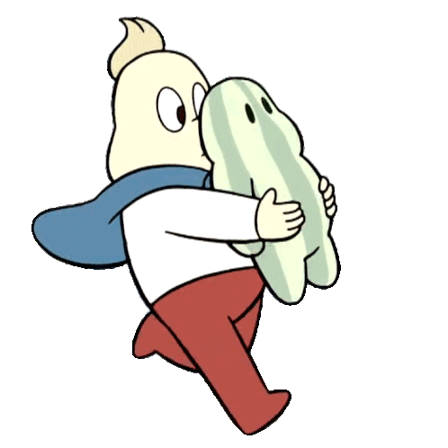

uwu
meow
uwu

Steven and the Stevens
They're gonna make you smile. It's funny how much I couldn't stand steven the first time I watched the show through. The eyes I was watching through were still tainted, still simply the attempted perception of those who would hold attatchment over me and call it love. The eyes that precieve my every act as if being observed by an outsider, they having shoved their own site in place of my own. It helped me learn to love myself to trust myself. to know where I was going and what I wanted to be. It sounds trite and yet that was my experience with the show.